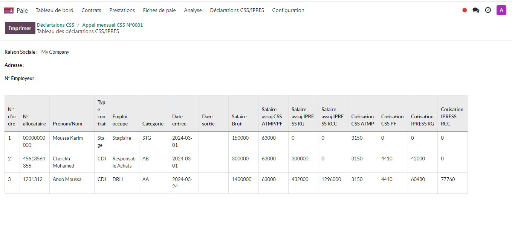
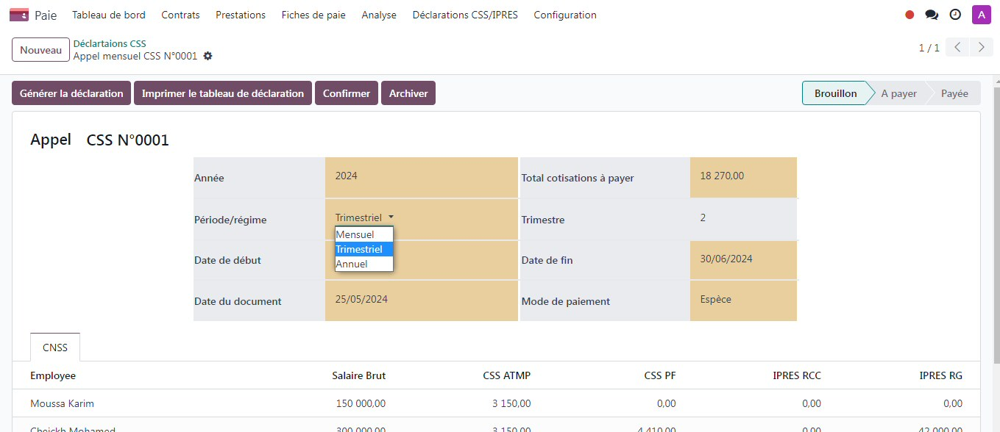
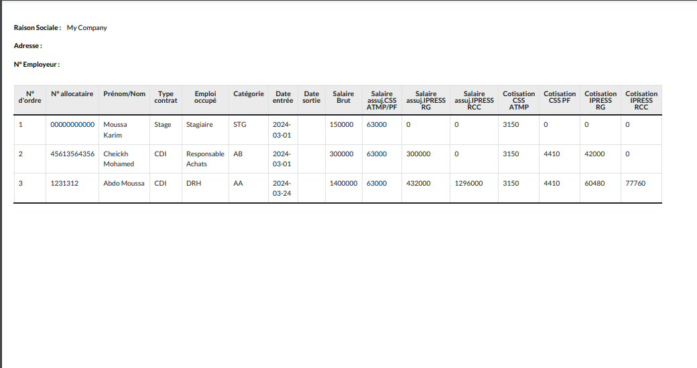
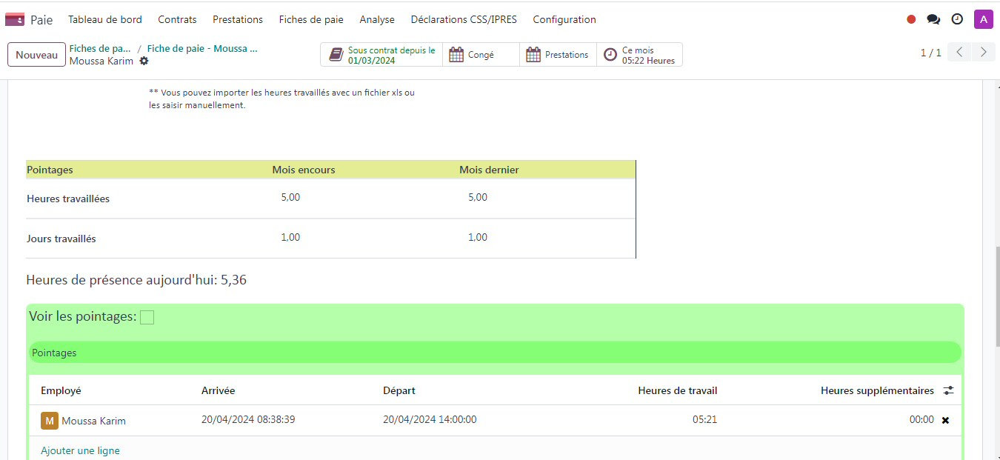
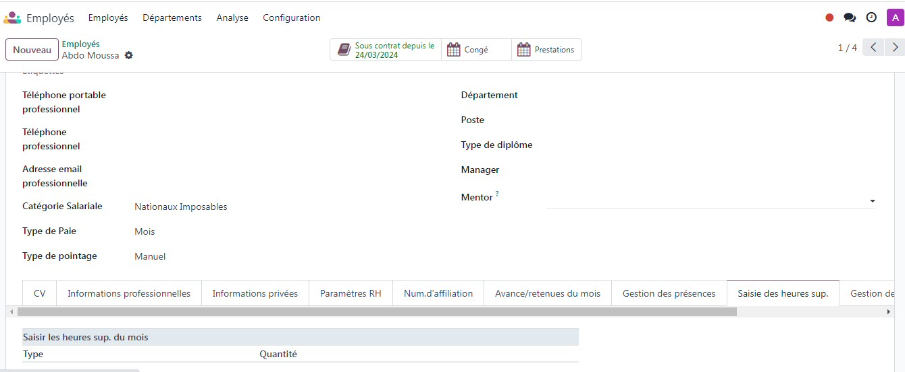
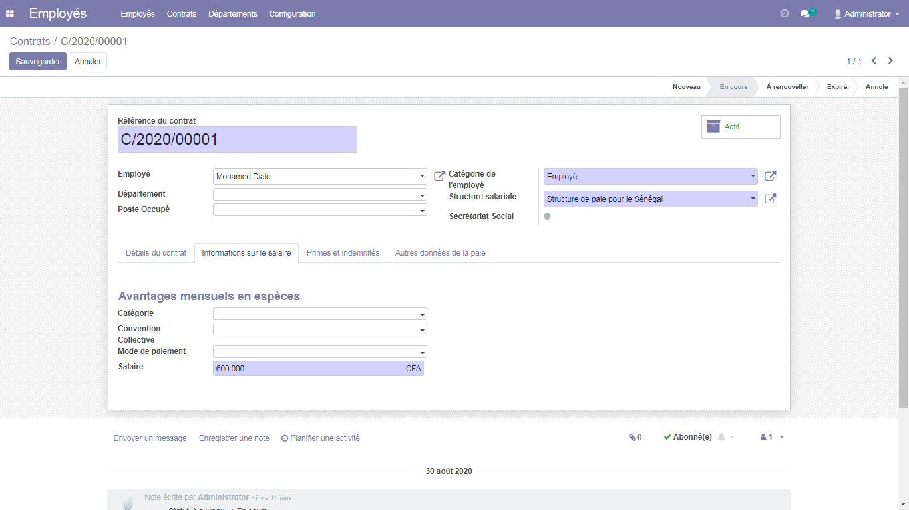
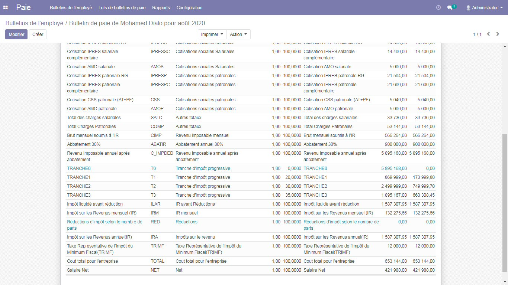
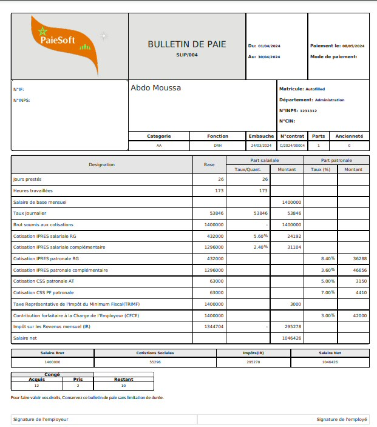

La version de ce module est bien élaborée avec un bulletion de paie top design et les taux CSS,IPRESS et IRR,TRIMF sont modifiables au niveau de la vue entreprise.



Fiche mise à jour selon le besoin de la paie sénégalaise:
Contrat employémodifié:


